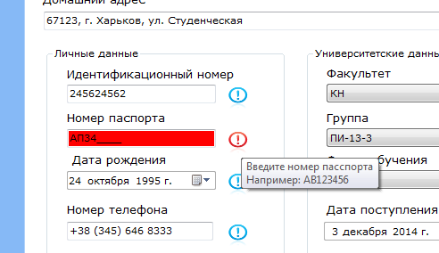

ѕри этом станут доступны пол€ дл€ изменений, где ¬ы можете внести всю актуальную информацию. ≈сли ¬ы не знаете, как правильно внести данные, можете навести курсор на знак восклицани€ возле пол€ и увидите подсказку. ѕри ошибочно введенных данных, пол€, которые заполнены неверно будут подсвечиватьс€ красным цветом.

ƒл€ подтверждени€ внесенных изменений нажмите кнопку "—охранить". ≈сли не хотите, чтобы изменени€ сохранились, выберите кнопку "ќтмена".
ѕосле окончани€ редактировани€ можно вернутьс€ к списку открытых студентов кликнув по иконке домика.

“ак же, можно вернутьс€ к списку групп или факультетов этого студента. ≈сли вы перешли к этому студенту из списка все студентов на факультете, то вы сможете вернутьс€ только к списку студентов на этом факультете.